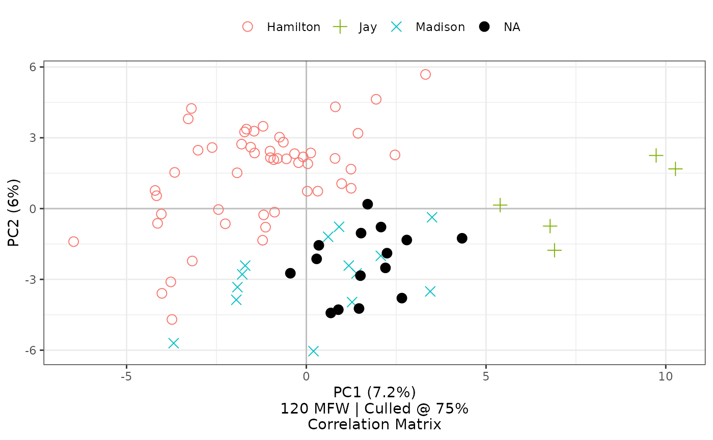
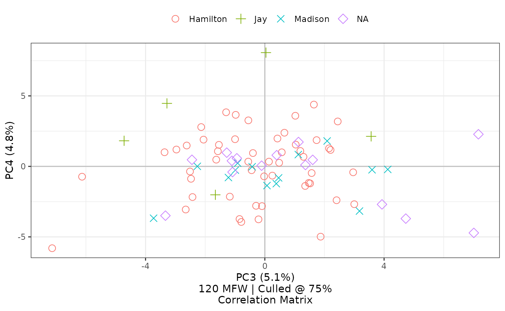

Principal component analysis
principal-component-analysis.RmdOne common method for understanding stylometric relationships among texts is to visualize a principal component analysis in a two-dimensional space. To do this, typically the first principal component is projected on the X-axis, and the second principal component is projected on the Y-axis. In addition to measuring word frequencies among all documents in a corpus, the stylo package shows a visualization of such an analysis, projecting many documents into a chart showing these kinds of coordinates. As an example, here’s the code and output showing similarities among the eighty-five Federalist Papers, originally published pseudonymously in 1788:
library(stylo)
federalist_mfw <-
stylo(gui = FALSE,
corpus.dir = system.file("extdata/federalist", package = "stylo2gg"),
analysis.type = "PCR",
pca.visual.flavour = "symbols",
analyzed.features = "w",
ngram.size = 1,
display.on.screen = TRUE,
sampling = "no.sampling",
culling.max = 75,
culling.min = 75,
mfw.min = 900,
mfw.max = 900)This visualization places each part by its frequencies of 120 of the most frequent words—chosen from among words appearing in at least three-fourths of all papers The chart shows that the texts whose authorship had once been in question, shown here with red Xs, have frequency distributions most similar to those by James Madison, shown here with green crosses.
As the figure suggests, most of these documents were eventually known to be written by Alexander Hamilton, John Jay, and James Madison, shown categorized here by their last names. Although most had known authorship, some were disputed or had joint authorship, shown here by the “NA” category. From their placement along the X- and Y-axes, the disputed papers seem closest in style to those by James Madison. The analysis here uses some of the same measures Frederick Mosteller and David Wallace famously used in their 1963 study, and it arrives at similar conclusions, but the ease and usefulness of tools like stylo means that preparing this quick visualization demands far less time and sweat.
In saving this output to a named object federalist_mfw,
stylo makes it possible to access the frequency tables to study them in
other ways. By taking advantage of this object, the stylo2gg package
makes it very easy to try out different visualizations. Without any
changed parameters, the stylo2gg() function will import
defaults from the call used to run stylo():
federalist_mfw |>
stylo2gg()
Using selected ggplot2 defaults for shapes and colors, the
visualization created by stylo2gg nevertheless shows the
same patterns of style, presenting a figure drawn from the same
principal components. Here, the disputed papers are marked by purple
diamonds, and they seem closest in style to the parts known to be by
Madison, marked by blue Xs.
In the simplest conversion of a stylo object, stylo2gg()
tries as closely as is reasonable to recreate the analytic and aesthetic
decisions that went into the creation of that object, creating a chart
comparing first and second principal components with axes marked by
each’s distributed percentage of variation; the caption shows the
feature count, feature type, culling percentage, and matrix type; and
the legend is shown at the top of the graph. As shown, stylo2gg even
honors the choice from the original stylo() call to show
principal components derived from a correlation matrix, although other
options are available.
Labeling points
From here, it’s easy to change options to clarify an analysis without
having to call stylo() again. Files prepared for stylo
typically follow a specific naming convention: in the case of this
corpus, Federalist No. 10 is prepared in a text file called
Madison_10.txt, indicating metadata offset by underscores,
with the author name coming first and the title or textual marker coming
next. The stylo package already uses the first part of this metadata to
apply color to different authors or class groupings of texts. Likewise,
stylo2gg follows suit, but it can also choose among these aspects to
apply a label. For this chart, it might make sense to replace symbols
with the number of each paper it represents:
federalist_mfw |>
stylo2gg(shapes = FALSE,
labeling = 2)
The option shapes=FALSE turns off the symbols that would
otherwise also appear; simultaneously, the option
labeling=2 selects the second metadata element from corpus
filenames—in this case the number of the specific paper—as a label for
the visualization. When a chosen label consists of nothing but numbers,
as it does here, the legend key changes to a number sign. If a label
includes any other characters, it becomes the letter ‘a’, ggplot2’s
default key for showing color of text.
Displaying these labels makes it possible further to study Mosteller and Wallace’s findings on the papers jointly authored by Madison and Hamilton: in this principal components analysis of 120 most frequent words, papers 18, 19, and 20 seem closer in style to Madison than to Hamilton, and Mosteller and Wallace’s work using different techniques seems to show the same finding for two of these three papers, with mixed results for number 20.
If it were preferred instead to label the author names, we could set
labeling=1. If we wanted to show everything, replicating
stylo’s option pca.visual.flavour="labels", we can set
labeling=0:
federalist_mfw |>
stylo2gg(shapes = FALSE,
labeling = 0)
The option labeling=0 shows entire file names for items in
the corpus, excepting the extension. This option also turns off the
legend by default, since that information is already indicated.
Highlighting groups
In addition to recreating some of the visualizations offered by stylo, stylo2gg takes advantage of ggplot2’s extensibility to offer additional options. If, for instance, we want to emphasize the overlap of style among the disputed papers and those by Madison, it’s easy to show a highlight of the 3rd and 4th categories of texts, corresponding to their ordering on the legend:
highlight option accepts numbers corresponding to
categories shown on the legend. Highlights on principal components
charts can include 1 or more categories, but highlights for hierarchical
clusters can only accept one category. To draw these loops around points
on a scatterplot, stylogg relies on the
ggalt
package.
Overlay loadings
With these texts charted, we might want to communicate something
about the underlying word frequencies that inform their placement. The
top.loadings option allows us to show a number of
words—ordered from the most frequent to the least frequent—overlaid with
scaled vectors as alternative axes on the principal components
chart:
federalist_mfw |>
stylo2gg(shapes = FALSE,
labeling = 2,
highlight = 4,
top.loadings = 10)
Set top.loadings to a number n to overlay
loadings for the most frequent words, from 1 to n. This
chart shows loadings and scaled vectors for the 10 most frequent words.
Alternatively, show loadings by nearest principal components, by the middle point of a given category, by a specific word, or all of the above:
federalist_mfw |>
stylo2gg(shapes = FALSE,
labeling = 2,
select.loadings = list(c(-4, -6),
"Madison",
call("word",
c("the", "a", "an"))))![In a list form, the `select.loadings` option accepts coordinates, category names, and words. Here, `c(-4,-6)` indicates that the code should find the loading nearest to -4 on the first principal component and -6 on the second principal component; *Madison* indicates that the function should find coordinates at the middle of papers by Madison and then find the loading nearest those coordinates; and three articles *the*, *a*, and *an* indicate, using `call('word')`, that these specific loadings should be shown.](principal-component-analysis_files/figure-html/unnamed-chunk-9-1.png)
In a list form, the select.loadings option accepts
coordinates, category names, and words. Here, c(-4,-6)
indicates that the code should find the loading nearest to -4 on the
first principal component and -6 on the second principal component;
Madison indicates that the function should find coordinates at
the middle of papers by Madison and then find the loading nearest those
coordinates; and three articles the, a, and
an indicate, using call('word'), that these
specific loadings should be shown.
These words and lines are gray by default. As of fall 2022, other colors can be specified, and the letters can be converted to uppercase for legibility:1
federalist_mfw |>
stylo2gg(top.loadings = 6,
loadings.line.color = "blue",
loadings.word.color = "navy",
loadings.upper = TRUE)
Set loadings.line.color and
loadings.word.color to change the coloring of loadings.
Optionally toggle loadings.upper to show uppercase letters,
or set loadings.spacer to define the character shown in
lieu of spaces when measuring bigrams and other n-grams.
Narrowing things down
One beauty of using a saved frequency list is that it becomes
possible to select a subset from the data to inform an analysis. By
counting all words that appear in 75% of the texts for this analysis,
stylo prepares a frequency table of 120 words. From there, stylo2gg can
select a subset of these using the features option, for
selecting a specific vector of words, or the num.features
option, for automatically selecting a given number of the most frequent
words.
One might, for instance, hypothesize that words shorter than four
characters are sufficient to differentiate style in these English
texts.2
Using the features option, this hypothesis can be tested by
choosing a smaller subset from the full list of 120 most frequent
words:
short_words <-
federalist_mfw$features.actually.used[federalist_mfw$features.actually.used |> nchar() < 4]
federalist_mfw |>
stylo2gg(shapes = TRUE,
features = short_words,
top.loadings = 10)Selecting a subset of features will also cause the caption to update from 120 MFW to 42 W, reflecting the changed number of features and the type: they are no longer most frequent words (MFW) but are now just words (W).
Results here suggest that the hypothesis would have been mostly correct, as it is possible still to see patterns in clusters. But limiting an analysis solely to these shorter words makes it harder to differentiate the styles of Hamilton and Madison. Interestingly, Jay’s style remains distinct in this consideration. Interesting, too, the overlay of the top ten loadings shows that papers with positive values in the second principal component in this chart—above a center line—are strongest in first-person plural features like “us” and “our” and “we.” And perhaps most interesting, just quickly looking at the top ten loadings suggests that Hamilton’s papers may have been less likely to use past-tense constructions like “was” and “had,” preferring infinitive forms marked by “to” and “be.”
If instead of manually selecting features one preferred to choose a
subset by number, the num.features option makes it possible
to do so.
library(stringr)
federalist_mfw |>
stylo2gg(shapes = FALSE,
labeling = federalist_mfw$table.with.all.freqs |>
rownames() |>
str_extract("^[A-Z]") |>
paste0(".",
federalist_mfw$table.with.all.freqs |>
rownames() |>
str_extract("[0-9]+")),
legend = FALSE,
highlight = 2,
num.features = 50)
Setting num.features to 50 will limit a chart to the 50
most frequent words. The caption updates to reflect this choice.
The code for this last visualization also shows that, in addition to
a number corresponding to the metadata from a filename, the
labeling option can also accept a vector of the same length
as the number of texts. Here, the result shows the first letter of each
author category, a dot, and the text’s corresponding number;
additionally, the legend has been turned off by setting its option to
FALSE.
Emphasizing with contrast
By default, stylo2gg uses symbols that ought to be distinguishable
when printing in gray scale. Use the black= option with the
number of a given category to further optimize for gray-scale printing
or to employ contrast to emphasize a particular group.
federalist_mfw |>
stylo2gg(black = 4)
Withholding texts from a PCA projection
In cases of disputed authorship, it can be desirable to understand
relationships among known texts and authors before considering those of
unknown provenance. New in version 1.0, stylo2gg’s
withholding parameter allows for certain classes to be left
out from defining the base projection of a principal components
analysis. These texts are then projected into a space they did not help
define:
federalist_mfw |>
stylo2gg(withholding = "NA",
highlight = 3,
black = 4)
Defining withholding makes it possible to ignore certain
classes of texts from the underlying projection.
Choosing principal components
Follosing stylo’s lead, stylo2gg shows the first two principal
components by default, but it may often be necessary to show more.
Introduced earlier in 2023, the pc.x and pc.y
parameters make it possible to map other components to the X-axis and
Y-axis, simultaneously updating axis labels to indicate components and
variance.3
federalist_mfw |>
stylo2gg(pc.x = 3, pc.y = 4)
Other options for principal components analysis
In addition to the options shown above, principal components analysis
can be directed with a covariance matrix (viz="PCV") or
correlation matrix (viz="PCV"), and a given chart can be
flipped horizontally (with invert.x=TRUE) or vertically
(invert.y=TRUE). Additionally, the caption below the chart
can be removed using caption=FALSE. Alternatively, setting
viz="pca" will choose a minimal set of changes from which
one might choose to build up selected additions: turning on captions
(caption=TRUE), moving the legend or calling on other
Ggplot2 commands, adding a title (using
title="Title Goes Here"), or other matters.
library(ggplot2)
federalist_mfw |>
rename_category("NA", "unknown") |>
stylo2gg(viz = "pca") +
theme(legend.position = "bottom") +
scale_shape_manual(values = 15:18) +
scale_size_manual(values = c(8.5, 9, 7, 10)) +
scale_alpha_manual(values = rep(.5, 4)) +
scale_color_manual(values = c("#E69F00", "#56B4E9", "#009E73", "#CC79A7")) +
labs(title = "Larger, solid points can make relationships easier to understand.",
subtitle = "Setting alpha values is a good idea when solid points overlap.") +
theme(plot.title.position = "plot")
Setting viz='pca' rather than the stylo-flavored
viz='PCR' or viz='PCV' prepares a minimal
visualization of a principal components analysis derived from a
correlation matrix. This might be a good setting to use if further
customizing the figure by adding refinements provided by ggplot2
functions—at which point it will become necessary to load that package
explicitly. The example here also shows the utility of the stylo2gg
function for adjusting labels, rename_category().